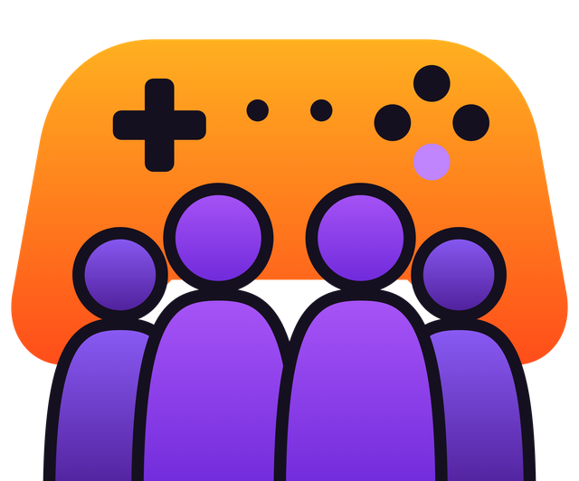

Bot Discord 100 % en françaisOn joue à quoi ce soir ?
La Squad compare les jeux de toute ta squad (Steam, Game Pass, Epic, Battle.net…) et te dit en 10 secondes à quoi vous pouvez jouer ensemble. Puis elle organise la soirée : invitations, inscriptions et un rappel pour tout le monde.
Tout ce qu'il faut pour vos soirées
Pensé pour les groupes d'amis qui jouent sur PC, sans prise de tête.
Jeux en commun
Les jeux multijoueurs que tout le salon vocal possède, triés par ce que vous jouez le plus.
Soirées organisées
« Samedi 21 h sur Valheim ? » Invitations en message privé, inscriptions par boutons, places limitées, un rappel en message privé avant le début et une annonce dans le salon. La soirée peut revenir toute seule chaque semaine, et /messoirees rassemble les tiennes sur tous tes serveurs.
Game Pass, Epic, Battle.net
Pas que Steam : active le Game Pass ou ajoute tes jeux Epic, Riot, Battle.net en un clic.
Famille Steam
Les jeux que ta famille Steam te prête comptent aussi, et le bot vérifie qu'il y a assez d'exemplaires pour jouer tous ensemble.
Tirage au sort
Un clic sur 🎲 et le hasard choisit, relancez autant de fois que vous voulez.
Jeux gratuits
Les jeux offerts sur Epic chaque jeudi, et ceux donnés sur Steam, GOG, Prime Gaming… dès qu'ils apparaissent.
Récap du mois
Chaque mois, le récap de la squad : soirées, jeux préférés et MVP. À partager !
Alertes promo
Le bot prévient la squad quand un jeu qu'il manque à certains passe en promo, et toi en message privé quand un jeu de ta liste de souhaits Steam est en promo.
Réglages en un écran
Les admins règlent tout dans /reglages, sur un seul écran.
Comment ça marche ?
Trois étapes, moins d'une minute.
Ajoute le bot
Clique sur « Ajouter à Discord » et choisis ton serveur.
Enregistre tes jeux
Tape /profil : relie ton Steam, active le Game Pass si tu l'as, ajoute le reste en un clic.
Rejoins le vocal
Avec tes potes, tape /nosjeux. C'est tout !
Les commandes
Toutes en français, toutes avec des explications dans Discord.
/nosjeux | Les jeux multijoueurs que tout le salon vocal possède, un jeu à la fois avec sa description ou en liste, avec filtres et un bouton « Au hasard ». |
/jeu | La fiche d'un jeu : description, prix, avis Steam, et qui l'a dans ta squad. Le nombre de joueurs est faux ? Corrige-le d'un clic. |
/nouveautes | Les nouveautés, tendances et sorties à venir sur Steam, un jeu à la fois avec sa description (ou en liste), à filtrer (solo, coop, PvP, gratuits, prix…) et à trier. Et les jeux offerts en ce moment sur Epic, Steam, GOG… |
/soiree | Organise une soirée (une heure et, si besoin, un jour : ex. 21h, samedi) avec inscriptions, invitations en message privé, rappels et annonce. Elle peut revenir toute seule chaque semaine. Avant de la créer, tu vois qui a le jeu sur le serveur. |
/messoirees | Tes soirées à venir sur tous tes serveurs : celles où tu viens et celles que tu organises, avec tes rappels et tes soirées récurrentes. |
/recap | Le récap du mois de la squad, publié automatiquement chaque 1er du mois. |
/profil | Ta carte de joueur (jeux les plus joués, ceux du moment, genres préférés) : lie ton Steam et gère tes jeux (Game Pass, Epic, Battle.net, Riot…), tes alertes perso, qui peut voir ta carte et tes données, ou regarde la carte d'un pote. |
/aide | Le mode d'emploi, par thème. |
/mesdonnees | Efface toutes tes données, immédiatement. |
/reglages | Admins : alertes promo et jeux gratuits, récap du mois, soirées, recherches et accès. |
Questions fréquentes
C'est gratuit ?
Oui, toutes les fonctionnalités actuelles sont gratuites.
Le bot a-t-il accès à mon compte Steam ?
Non. Il lit seulement les informations publiques de ton profil (pseudo et liste de jeux) via l'API officielle de Steam. Il ne demande jamais ton mot de passe.
Le bot ne voit aucun de mes jeux, pourquoi ?
Tes détails de jeux sont sûrement privés. Sur Steam : ton profil → Modifier le profil → Paramètres de confidentialité → « Détails des jeux : Public ». Le bot relit ta bibliothèque tout seul dans les 12 h.
Le bot écoute-t-il le salon vocal ?
Non. Il regarde seulement qui est connecté au salon au moment où tu tapes une commande, pour savoir qui fait partie de la squad. Il n'écoute rien et ne lit pas vos messages.
Comment supprimer mes données ?
Tape /mesdonnees : tout est effacé immédiatement. Voir aussi la politique de confidentialité.
Un jeu possédé sur Game Pass et sur Steam, ça marche ensemble ?
Seulement si le jeu propose le crossplay entre Steam et Xbox : pensez à vérifier sur la page du jeu.
Prêt pour ce soir ?
Ajoute La Squad et lance ta première partie en moins d'une minute.
➕ Ajouter à Discord